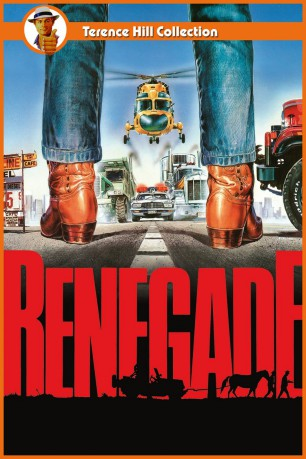

#4394 Renegade - Terence Hill und der faulste Gaul der Welt
Alternativ: They Call Me Renegade (Englischer Titel)
 
 IMDB-Wertung: 6.3 / 10
IMDB-Wertung: 6.3 / 10  Metascore: 0
Metascore: 0 
Der Herumtreiber Luke Mantee, der nicht viel mehr als einen Jeep CJ-7 Renegade, sein Pferd Joe Brown und ein altes Paar Stiefel besitzt, reist ziellos durch Arizona. Sein Freund Moose, dem die Hände durch eine Gefängnisstrafe gebunden sind, bittet Luke, sich bis zu seiner Entlassung um Sohn Matt und sein Landhaus samt Grundstück namens Green Heaven zu kümmern.Für Matt und Luke beginnt eine Reise voller Abenteuer. Sie treffen auf zwei rabiate Trucker, einen korrupten Sheriff, eine als Schlägertrupp engagierte Rockergang, diverse Killer, wettfreudige Kneipenbesucher sowie am Ziel ihrer Fahrt auf gastfreundliche Mormonen.
Jahr: 1987
Dauer: 93 Minuten
FSK: 12
Land: Studio: TobisTonspuren:
Untertitel: Deutsch,
Auflösung: 1080p (1776x1080) Größe: 5591 MB
Genre: Action, Abenteuer, Komödie
Regisseur: Enzo Barboni
Drehbuch: Dario Argento
Soundtrack:
Darsteller:
 Terence Hill als Luke
Terence Hill als Luke Robert Vaughn als Lawson
Robert Vaughn als Lawson- Norman Bowler als Moose
- Colin McKay als Trucker 1
- Ron Nix als
- Ross Hill als Matt
- Donald Hodson als Ely
- Beatrice Palme als Tallulha
- Lisa Ann Rubin als Melody
- Luisa Maneri als Petula
- Valeria Sabel als Rachel
- Curt Bortel als Trucker 2
- Joe Krieg als Chickadee
- Jannel Robinson als Policewoman
- Matthew Uriarte als Rico
- Royce Clark als Sheriff
- Cyrus Elias als Rosson
- Moe Mosley als Ryan
- Sandy als Joe Brown
- Dick Alexander als
- Ron Althoff als
- Luigi Bonos als Bartender
- Ron Briskman als
- Gaia D'Onofrio als
- Ennio Di Meo als Man in shop
- Carolyn Jacobs als Maud
- Bill Kanges als
- Murray Kramer als
- Dusty O'Dee als
- Curtis Thomas III als
Datei: X:\Person\Bud Spencer + Terence Hill\Renegade - Terence Hill und der faulste Gaul der Welt (1987, FSK12, 1776x1080).mkv seit 13.09.2016
Festplatte: HD Collection-7+mehr(A-Z)+Person
 Es gibt insgesamt 43 Filme in der Gruppe 'Person\Bud Spencer + Terence Hill'
Es gibt insgesamt 43 Filme in der Gruppe 'Person\Bud Spencer + Terence Hill'